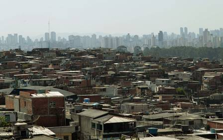
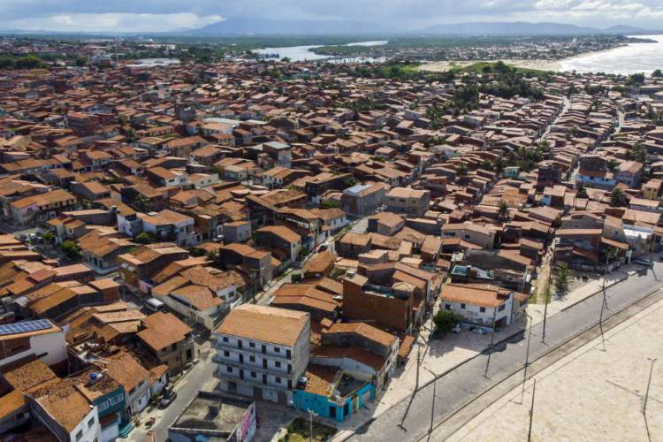
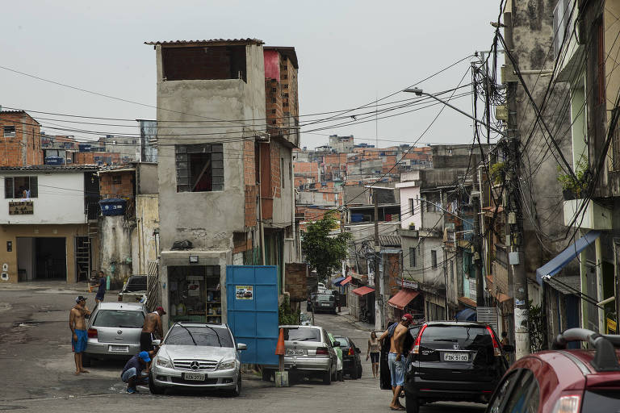

Maiores Favelas do Brasil



Baixadas da Estrada Nova


Pirambu



Heliopólis
O que são as favelas? Resultado de imagem para favela Segundo a definição do Instituto Brasileiro de Geografia e Estatística (IBGE), favela é um conjunto de domicílios com, no mínimo, 51 unidades, que ocupa, de maneira desordenada e densa, terreno de propriedade alheia (pública ou particular) e que não possui acesso a serviços públicos essenciais.
Aprenda MaisESTA É UMA OBRA DE FICÇÃO, QUALQUER SEMELHANÇA COM NOMES, PESSOAS, FATOS OU SITUAÇÕES DA VIDA REAL TERÁ SIDO MERA COINCIDÊNCIA.
História das Favelas
A expressão “favela” é comumente repetida pelas pessoas no cotidiano e pelos meios de comunicação. Geralmente, ela é definida como casas em condições precárias que se localizam em morros. Mas será mesmo essa a correta definição de favela? Na verdade, favela significa toda e qualquer ocupação irregular de terrenos públicos ou privados ou em áreas que não são recomendadas para a moradia (como os morros). As pessoas que moram em favelas, geralmente, não dispõem de condições mínimas de infraestrutura e não possuem a posse legal dos terrenos onde construíram suas casas. As favelas são resultado das desigualdades sociais e do grande número de pessoas que vivem em condições precárias de vida nas cidades. Tal processo, em termos históricos, foi resultante do chamado “êxodo rural” que, por causa da substituição do homem pela máquina no campo, acarretou na migração em massa de pessoas do campo para as cidades. O processo de surgimento das favelas chama-se favelização. Dados históricos apontam que as primeiras favelas no Brasil surgiram no final do século XIX, após o término da Guerra de Canudos (1896-1897), em terrenos cedidos pela Marinha a soldados que retornaram das missões militares. Entretanto, elas tornaram-se mais visíveis após o processo de industrialização do país, que se intensificou após a década de 1950.
Fonte: Wikipedia
"Um país se faz da educação. Quem planta arma, colhe corpo no chão. Temos que acreditar nas favelas, nos cortiços, chega de morrer por migalhas, de mofar em presídios"
Facção Central
Rocinha – Rio de Janeiro, RJ.
Sol Nascente – Ceilândia, DF.
Rio das Pedras – Rio de Janeiro, RJ.
Mude de diretório com o comando Alt
Para acessar as configurações de edição, pressione Ctrl + ,
Para fechar a página, pressione o botão Esc